Home >>Archives >>2013 >>
Play NAOMI (Arcade) Games on your computer
Download nullDC NAOMI for your PC
NAOMI is a arcade system made by SEGA Japan Corporation in 1999. The Dreamcast console's specifications
is the same as NAOMI. This is the one of the systems associated with various games like Marvel Vs. capcom 2,
Capcom Vs. SNK Millenium Series, Soul Calibur and Guilty Gear.
Now you can now play NAOMI Games by using this emulator called nullDC. Please follow instructions below
Getting Started
1. Meet the Requirements
To enjoy NAOMI experience, your computer or laptop meet some important requirements below.
Minimum System Requirements
CPU : Pentium 4 at least of speed at 2.0Ghz with SSE2 instruction feature
Memory : at least 512MB of RAM and 1542MB of Virtual Memory (optional)
Video : 128MB of Video Card with Vertex Shaders 2.0 and must be any overclockings are deactivated
Sound : 21000Hz of Sound Card
Other : Microsoft Visual C++ 2010 Redistributable and Archive Software Provider (e.g: WinRAR, 7zip)
2. Download the Emulator
In order to play, you'll need the emulator to run on your computer or laptop.
Whatever version you want.
Download Emulator Version 1.0.3 here
NOTE: BIOS is already included. Just Please extract all these files
in any directory you desired.
Download Emulator Version 104.0 SVN here
NOTE: Without BIOS. But this is also stable, DirectX11 Supported and for computers with high-end specs.
3. Download the ROMS and learn how to run
ROM (Read-Only Memory) is actually a game disc for all arcade machines and consoles including NAOMI.
But some users uploads CHD format
instead of .dat and .lst.
Where can i download MAME CHD ROMS?
ANSWER : Go to emuparadise.me or Google and search any NAOMI Games
(Must be in MAME ROM or .chd file for gd-roms and if is in the archive, you must extract it)
NOTE: Mostly NAOMI Games are not using GD-ROMS which is in .chd format for MAME. It Might be in like this..
Marvel Vs Capcom 2 not using GDROM
----------------------------------
"epr-23085a.ic11"
and more .icXX formats
Capcom VS. SNK : Millenium Fight 2000 uses GD-ROM
-------------------------------------------------
"GDL-0004.CHD"
You'll need to download the NAOMI Converter.
But before that, you must know all information in NAOMI ROMS (Games)
NAOMI Games Lists
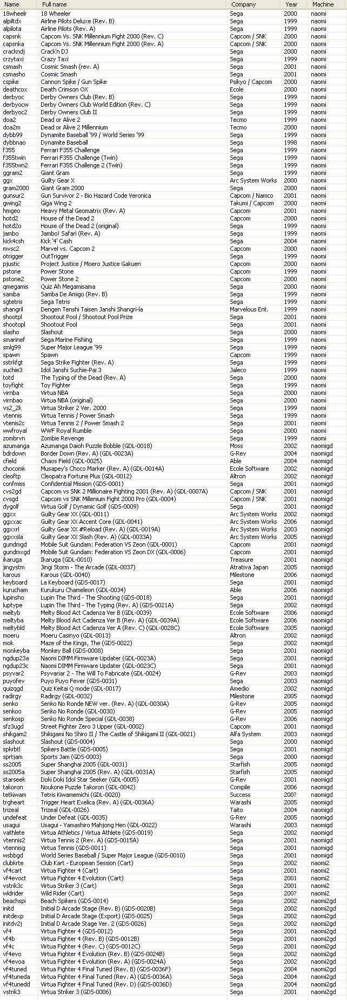
"naomigd" and "naomi2gd" is using GD-ROMS
While "naomi" and "naomi2" machine is not using GD-ROMS
to Convert .CHD files into .dat and .lst for nullDC can read,
Download NAOMI Converter
Download here
PROCEDURES BEFORE YOU RUN

As you can see the folders, make a directory only from Roms, extract ROMS from archive
in every folder like that.
Must be in proper name! (example : Gulty Gear XX = ggxx)
JUST LOOK AGAIN AT THE GAME LISTS in the first column!
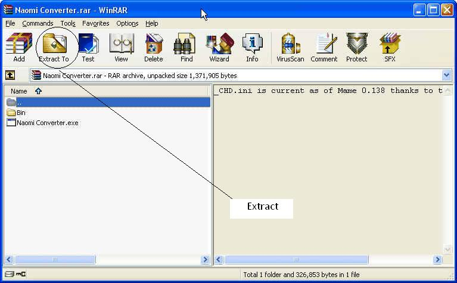
Open the "Naomi Converter.rar" and extract in ROMS directory
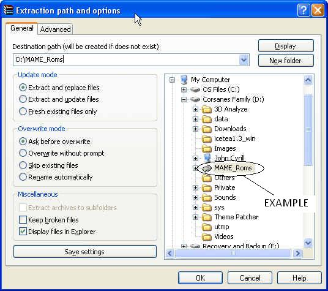
Look at the directory and you will see the Naomi Converter
Then RUN it!
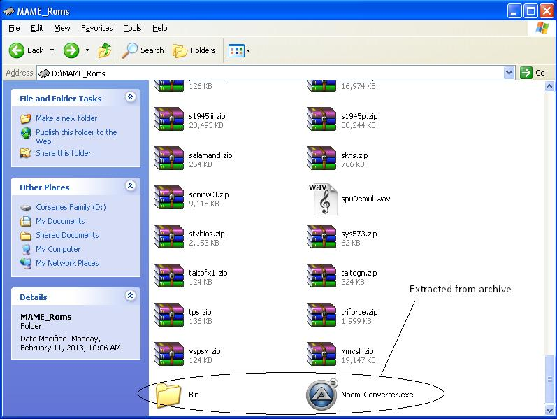
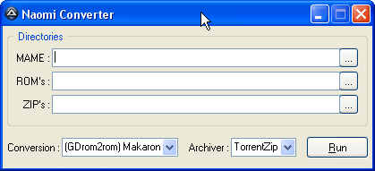
After you run, verify first that your roms are already extracted from archives (.zip, .rar)
and close all unnecessary / not needed programs
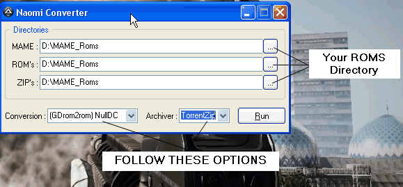
THEN PRESS RUN
Please wait in a few minutes depending of file sizes until complete
Look back at your ROMS directory and as you can see two new folders, thats the output of your new NAOMI ROMS
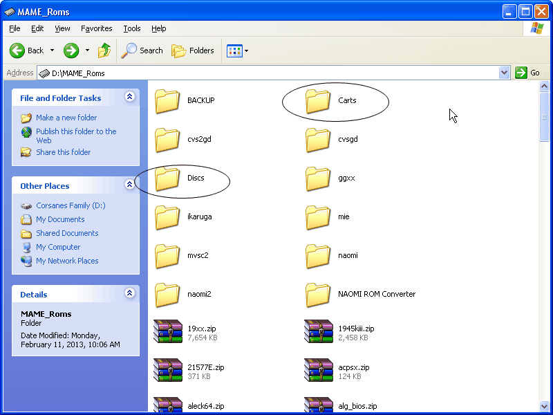
Where are some missing .lst files anyway???
The program deleted some .lst files because of bug.
DON'T WORRY! HERE'S SOME LST FILES!
Download
NOTE: The Filename of .lst, must be the same with new .dat file
Example:
Capcom vs SNK Millenium Fight 2000 Pro.lst
Capcom vs SNK Millenium Fight 2000 Pro.dat
And must be not separated!! They need to stick together! Hehe!
4. Run nullDC NAOMI and open your files
NOTE : nullDC NAOMI must be extracted before we get started!
Run nullDC NAOMI
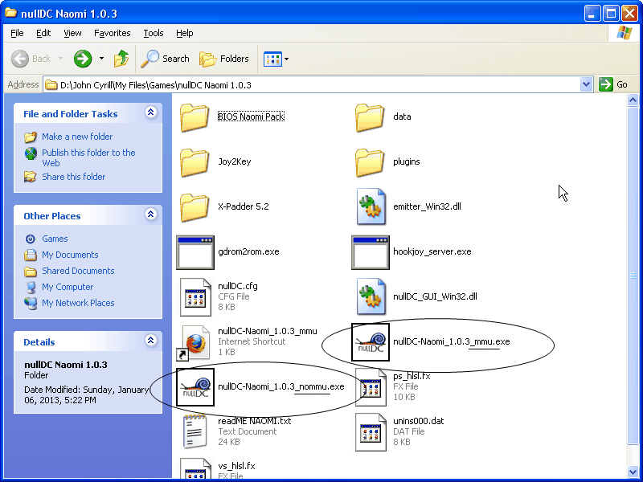
For Version 1.0.3, As you can see, two .exe are there. mmu is a Memory Management Unit. choose whatever it is.
Now you had run nullDC NAOMI. To configure settings, click Options>>Select Plugins first.

INFORMATION ABOUT PLUGINS
PowerVR Graphics Plugin
PowerVR is a Video Card for NAOMI Machine and Dual-Core PowerVR for NAOMI2.
In this emulator, you can choose variety versions of PowerVR.
For Version 1.0.3
Chankast Video Plugin : Stable Video plugin for low-end pc's, but it use OpenGl, not DirectX
nullPVR : Very Good Video Plugin, colors are accurate but it lags for low-end in a moments because
of high Memory Consumption.
For Version 104.0 SVN
nullPVR : Very Good Video Plugin, All variants are stable but it very lags for low-end in a moments because
of high Memory Consumption, With New but buggy Adaptive Linear.
nullPVR (D3D11) : Similar, but it about to use DirectX 11 (Windows Vista and 7) instead of DX 9.
GD-ROM : Image Reader plugin
Used to read .lst and .dat files
AICA Sound Plugin
Yamaha AICA is a Sound Card for NAOMI Machine
In this emulator, you can choose variety versions of AICA.
For Version 1.0.3
Chankast's AICA Audio Plugin : Not stable for some computers but it disables frame locking
Elsemi's AICA Audio Plugin : Very not stable and it gaps, NOT RECOMMENDED
Empty : No Sound will produce but it delivers high emulation performance however, it so fast.
nullAICA : Very Stable Audio Plugin, you can configure their settings unlike others
For Version 104.0 SVN
ONLY nullAICA and Empty AICA are only remain and its very similar
Maple Input/Saves Plugin
You can choose anyone of them, but it has a differences
JAMMA and WinHook are for keyboards
While the rest is all optional
While on the other contents in "Options" tab are in your risk
REMINDERS FOR VERSIONS 104 or HIGHER!
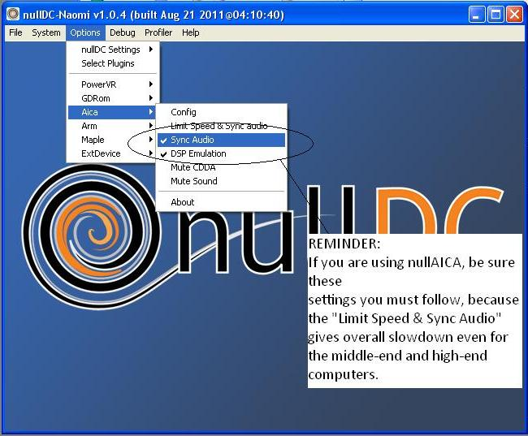
After you configured
Click File>>Normal Boot
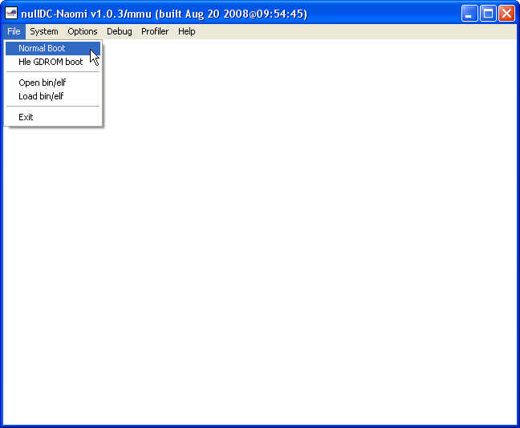
Then open your NAOMI ROM (.lst file)
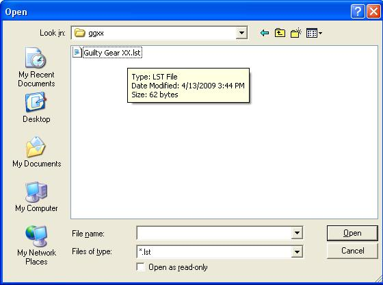
AND YOU ARE NOW DONE!! CONGRATULATIONS!
For more questions regarding this article, email me at johncyrillcorsanes@hotmail.com
Follow me at Facebook
Twitter : @jccultima123
Go back to articles
|